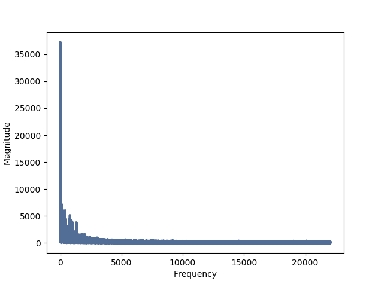
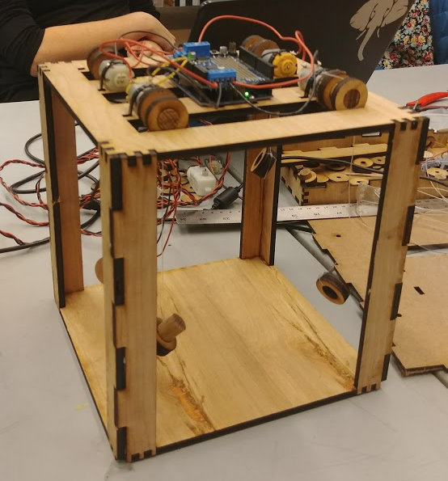
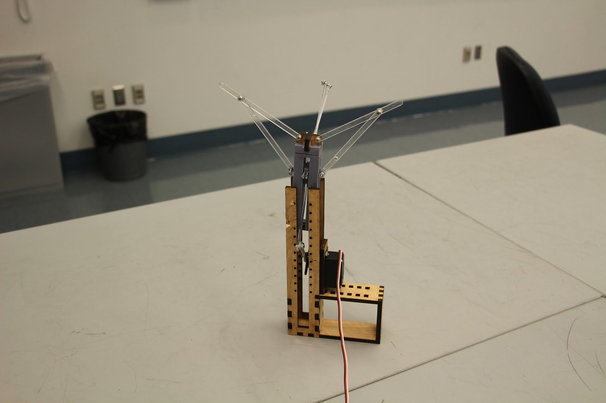
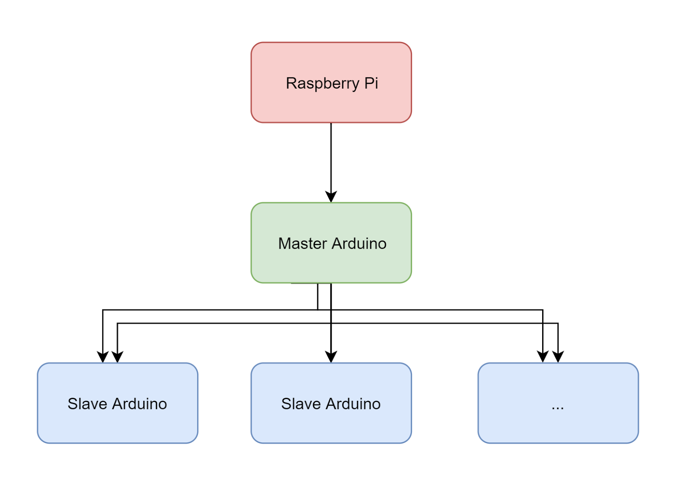
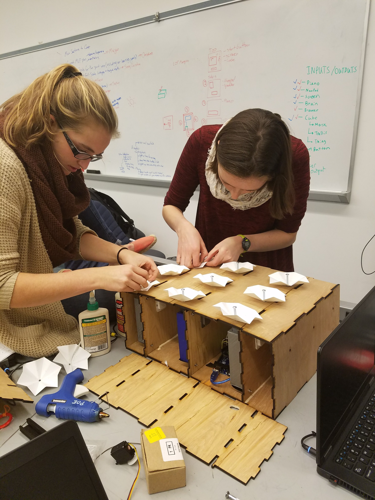

During our first sprint we created a small structure with hanging objects that are moved up and down based the frequency of sound observed in the previous few seconds. We also decided during this sprint that we wanted to pivot to building a structure with nodes that open and close based on movement instead of sound.
Sound Processing
For this sprint, the software team worked on recording audio using a computer microphone and processing the sound waves. We learned about using threading so that we were able to record and process the sound waves simultaneously. We determined which frequency was most abundant in the previous few seconds and sent a value to serial corresponding to which frequency the microphone had just heard.
Integrated System
The integrated system for this sprint consisted of a laser cut box structure with 4 hanging shapes attached to motors. The 4 shapes would move up and down according to the frequency of sound in the enviroment. We collected sound sensor data with the laptop microphone and connected it to our structure so a specific motor would move depending on the range of the maximum frequency from the previous few seconds.
Mechanical Progress
During this sprint our team decided to pivot to a mechanical design with a structure that would open and close instead of shapes that would move up and down. Due to this pivot, we spent some time working on a structure that opened and closed in addition to making progress on our integrated system. We were able to design and build such a structure that worked but was overdesigned and large.
Sprint 2 Goals
Our goals for sprint 2 were to have a grid of nodes that expand and contract using servos in reaction to a person walking through which we planned to detect using computer vision. We also had the goal of expanding in later sprints to incorporate bird movement using a cellular automata model.

During our second sprint we created a 3x3 matrix of nodes which open and close based on wheter motion is sensed in one of 3 sections. We sensed motion using OpenCV and were able to get our code integrated and working on a raspberry pi with a raspi camera.
Mechanical Design
The mechanical design of our system consisted of a geared system which was able to open and close three nodes with one servo. The nodes were designed for easy opening and closing. The geared system was loosely based off the way a train works. We created a box to enclose the system for aesthetics. We included 3 servos for a total of 9 nodes in our integrated sprint deliverable.

Motion Detection
The software team worked on motion detection using opencv for this sprint. We wanted to be able to determine whether there was motion in one of three sections so we could specify one of the three servos to move. To detect motion, we found the difference of the current screen and the previous 2 screens. We were able to get our code working on a raspberry pi with a raspberry pi camera. We sent 1 of 3 possible values to serial to specify which servo the arduino should move.

Electrical Design
We wanted to make a system that was easily scalable. To achieve this goal, we created a distributed system of Arduinos that communicate over I2C. We had a leader Arduino that communicatated and sent commands to the follower Arduino through I2C. Although we only had one follower for this sprint, this scalable design will make it easier for us when we want to scale up and add more nodes to our system.
Sprint 3 Goals
For sprint 3, we are planning on working on making the movement of our nodes smoother, probably by transitioning from servos to stepper motors. We also want to introduce LEDs which respond to sound to incorportate our software work from sprint 1 and aim to incorporate face detection and speed detection. Lastly, we want to build a shop botted frame and increase the overall aestheticism of our system.
